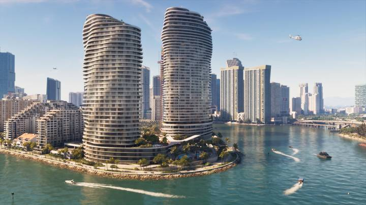
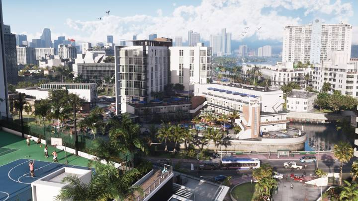
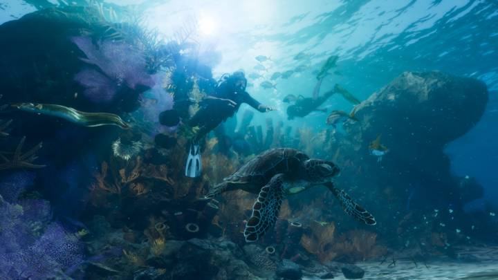

// Карта Леониды
Карта GTA 6: штат Леонида
Интерактивная карта Леониды: регионы, места из официальных видео и кадров. Отмечай, что видел и нашёл, — прогресс сохранится на этом устройстве.
Схема по официальным описаниям регионов. Точные границы и места появятся после релиза 19 ноября — тогда же добавим коллекционки, секреты и магазины.
Статьи о регионах (6)

Карта GTA 6: штат Леонида и все регионыОбновлено 24.09.2026

Вайс-Сити в GTA 6: главный город ЛеонидыОбновлено 24.09.2026

Размер карты GTA 6 по сравнению с GTA 5Обновлено 24.09.2026

Животные в GTA 6: кто живёт в ЛеонидеОбновлено 26.09.2026

Port Gellhorn в GTA 6: забытое побережье ЛеонидыОбновлено 27.09.2026

Leonida Keys в GTA 6: острова, где «жизнь не блестит, но легка»Обновлено 29.09.2026